<title>Guías de oficina Ferjusanz</title>
<meta name="claude:viewport-fit-sides" content="cover">
<link rel="stylesheet" href="https://fonts.googleapis.com/css2?family=Barlow+Condensed:wght@600;700&family=Inter:wght@400;600&display=swap">
<style>
/* Libreta de oficina: fichas por tarea, pasos grandes con la foto debajo, una sola columna en el móvil */
:root{--bg:#f5f6f1;--fg:#1d2a20;--muted:#5a685c;--line:#d9dfd3;--card:#ffffff;--acc:#1f7a3a;--granate:#7b1e2b;--ojo:#fff6dc;--ojo-borde:#e6c35c;
--display:"Barlow Condensed","Arial Narrow",system-ui,sans-serif;--text:Inter,system-ui,-apple-system,sans-serif}
@media (prefers-color-scheme:dark){:root:not([data-theme="light"]){--bg:#121813;--fg:#e5ebe3;--muted:#9eac9c;--line:#2b352c;--card:#1a221b;--acc:#6cc884;--granate:#e08592;--ojo:#2d2715;--ojo-borde:#8a7330;color-scheme:dark}}
:root[data-theme="dark"]{--bg:#121813;--fg:#e5ebe3;--muted:#9eac9c;--line:#2b352c;--card:#1a221b;--acc:#6cc884;--granate:#e08592;--ojo:#2d2715;--ojo-borde:#8a7330;color-scheme:dark}
html{scroll-behavior:smooth}
@media (prefers-reduced-motion:reduce){html{scroll-behavior:auto}}
body{background:var(--bg);color:var(--fg);font:17px/1.5 var(--text);padding-left:max(16px,env(safe-area-inset-left,0px));padding-right:max(16px,env(safe-area-inset-right,0px));padding-block:20px 48px}
main{max-width:640px;margin:0 auto;display:grid;gap:40px}
header{display:grid;gap:6px}
.marca{font:700 14px/1 var(--display);letter-spacing:.14em;text-transform:uppercase;color:var(--granate)}
h1{font:700 2.4rem/1 var(--display);margin:0;text-wrap:balance}
header p{margin:0;color:var(--muted)}
.indice{display:grid;gap:8px}
.ficha{display:grid;grid-template-columns:2.2rem 1fr auto;align-items:center;gap:10px;padding:14px;border:1px solid var(--line);border-radius:12px;background:var(--card);color:var(--fg);text-decoration:none;font-weight:600}
.ficha:focus-visible,.arriba:focus-visible{outline:3px solid var(--acc);outline-offset:2px}
.cuenta{font-weight:400;font-size:.85rem;color:var(--muted)}
.emo{font-size:1.5rem;line-height:1}
section{display:grid;gap:14px;scroll-margin-top:12px}
h2{font:700 2rem/1.05 var(--display);margin:0;display:flex;gap:10px;align-items:center;padding-top:20px;border-top:3px solid var(--granate);text-wrap:balance}
h3{font:700 1.4rem/1.1 var(--display);margin:8px 0 0}
.intro{margin:0;color:var(--muted)}
.pasos{list-style:none;margin:0;padding:0;display:grid;gap:22px}
.txt{display:grid;grid-template-columns:2.2rem 1fr;gap:10px;align-items:start}
.txt p{margin:0;min-width:0}
.num{display:grid;place-items:center;width:2.2rem;height:2.2rem;border-radius:50%;background:var(--acc);color:var(--bg);font:700 1.25rem/1 var(--display)}
figure{margin:10px 0 0 calc(2.2rem + 10px)}
figure img{display:block;width:100%;max-width:320px;height:auto;border-radius:14px;border:1px solid var(--line)}
@media (max-width:420px){figure{margin-left:0}figure img{max-width:100%}}
.dice{margin:0;padding-left:1.1rem;display:grid;gap:10px}
.ojo{background:var(--ojo);border:1px solid var(--ojo-borde);border-radius:12px;padding:12px 14px}
.ojo b{font:700 1.1rem/1 var(--display);letter-spacing:.06em;text-transform:uppercase}
.ojo ul{margin:6px 0 0;padding-left:1.1rem;display:grid;gap:6px}
.arriba{color:var(--acc);font-weight:600;text-decoration:none;justify-self:start;padding:6px 0}
footer{color:var(--muted);font-size:.85rem}
</style>
<main id="top">
<header><span class="marca">Ferjusanz · oficina</span><h1>Guías para Carmen</h1>
<p>Lo de cada día en la app, paso a paso. Lo que hay que pulsar va en un <strong>recuadro rojo</strong>. Si te atascas, pulsa el botón rojo <strong>SOS</strong> de la app.</p></header>
<nav class="indice" aria-label="Guías"><a class="ficha" href="#pedidos-por-telefono"><span class="emo" aria-hidden="true">📞</span><span>Apuntar un pedido por teléfono</span><span class="cuenta">6 pasos</span></a><a class="ficha" href="#facturar"><span class="emo" aria-hidden="true">🧾</span><span>Hacer una factura</span><span class="cuenta">7 pasos</span></a><a class="ficha" href="#caja"><span class="emo" aria-hidden="true">💵</span><span>Apuntar la caja (efectivo)</span><span class="cuenta">6 pasos</span></a><a class="ficha" href="#banco"><span class="emo" aria-hidden="true">🏦</span><span>Revisar el banco</span><span class="cuenta">5 pasos</span></a><a class="ficha" href="#proveedores"><span class="emo" aria-hidden="true">📥</span><span>Facturas de proveedores</span><span class="cuenta">7 pasos</span></a><a class="ficha" href="#informes-jorge"><span class="emo" aria-hidden="true">📤</span><span>Informes para Jorge (cierre de mes)</span><span class="cuenta">4 pasos</span></a><a class="ficha" href="#guion-llamadas"><span class="emo" aria-hidden="true">☎️</span><span>Guion de llamadas comerciales</span><span class="cuenta">7 pasos</span></a></nav>
<section id="pedidos-por-telefono"><h2><span class="emo" aria-hidden="true">📞</span>Apuntar un pedido por teléfono</h2><p class="intro">Cuando un cliente llama para pedir. Se apunta mientras habla. Nada se guarda hasta que pulses «Guardar pedido».</p><ol class="pasos"><li class="paso"><div class="txt"><span class="num">1</span><p>En Inicio, pulsa <strong>«Apuntar pedido»</strong>.</p></div><figure>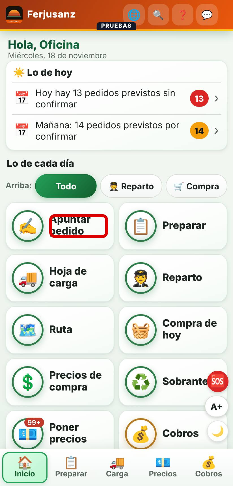</figure></li><li class="paso"><div class="txt"><span class="num">2</span><p>Escribe <strong>unas letras del nombre</strong> del cliente.</p></div><figure>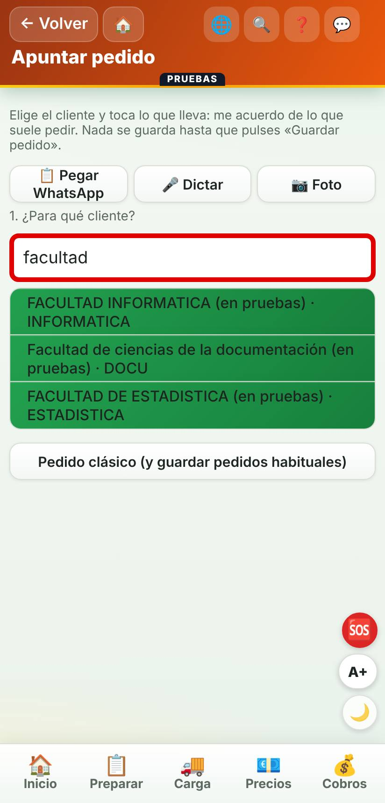</figure></li><li class="paso"><div class="txt"><span class="num">3</span><p>Toca el <strong>cliente</strong> en la lista.</p></div><figure>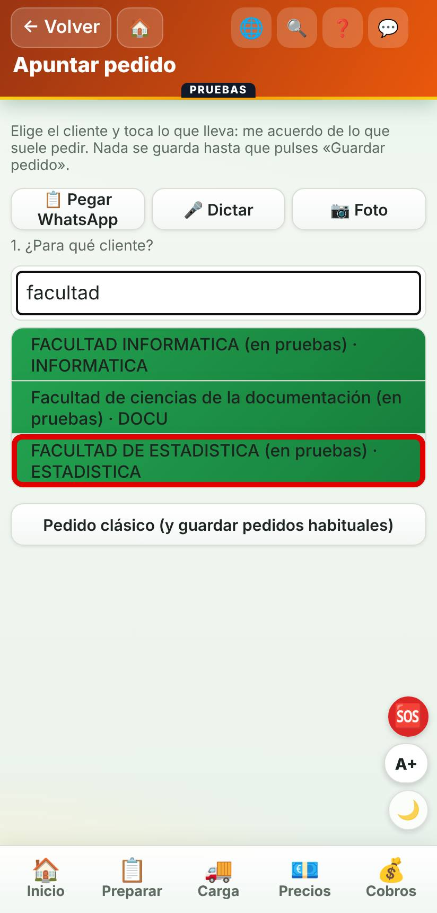</figure></li><li class="paso"><div class="txt"><span class="num">4</span><p>Elige <strong>para cuándo</strong>: «Hoy», «Mañana» o una fecha.</p></div><figure>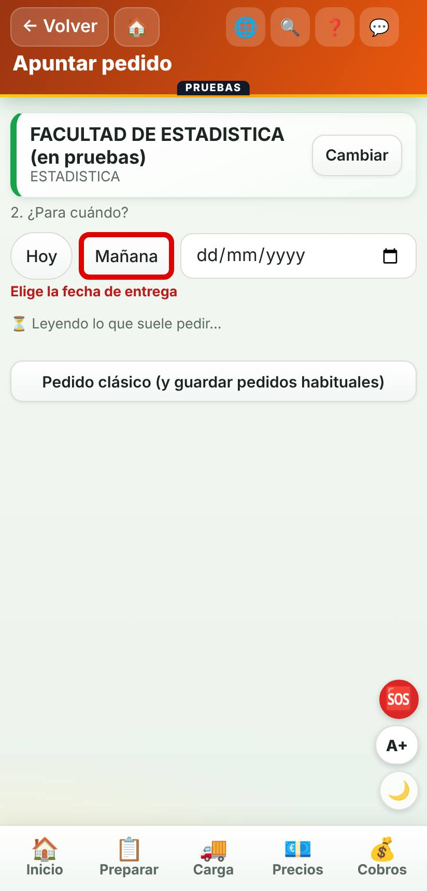</figure></li><li class="paso"><div class="txt"><span class="num">5</span><p>Pulsa <strong>«Lo de siempre»</strong>: pone lo que suele pedir. Cambia las cantidades con <strong>−</strong> y <strong>+</strong>. Si pide algo más, escríbelo en «Otro producto».</p></div><figure>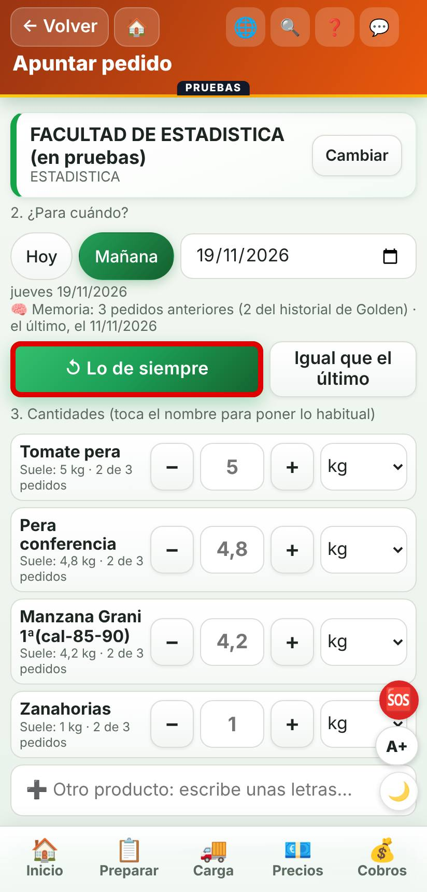</figure></li><li class="paso"><div class="txt"><span class="num">6</span><p>Repite el pedido al cliente en voz alta y pulsa <strong>«Guardar pedido»</strong>.</p></div><figure>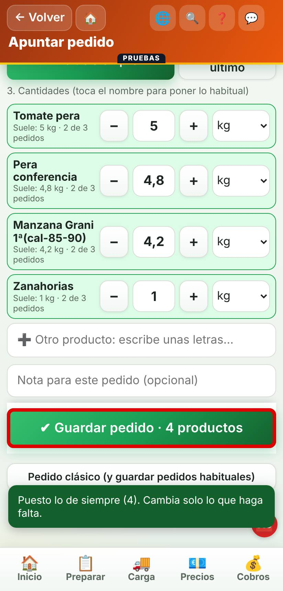</figure></li></ol><aside class="ojo"><b>Ojo</b><ul><li>Si pide «patatas» sin más, es la patata general. La <strong>agria</strong> solo si la pide.</li><li>Con el botón <strong>«🎤 Dictar»</strong> puedes decir el pedido en voz alta en vez de escribirlo.</li><li>No prometas <strong>descuentos ni plazos de pago</strong>: eso lo decide Fernando.</li></ul></aside><a class="arriba" href="#top">↑ Volver a las guías</a></section><section id="facturar"><h2><span class="emo" aria-hidden="true">🧾</span>Hacer una factura</h2><p class="intro">Para facturar los albaranes entregados. <strong>Hasta que Fernando diga lo contrario, las facturas de verdad se siguen haciendo en Golden</strong> (como mínimo hasta el 1/1/2027). Esto es para cuando se facture con la app.</p><ol class="pasos"><li class="paso"><div class="txt"><span class="num">1</span><p>En Inicio, abre el grupo <strong>«Facturas y análisis»</strong>.</p></div><figure>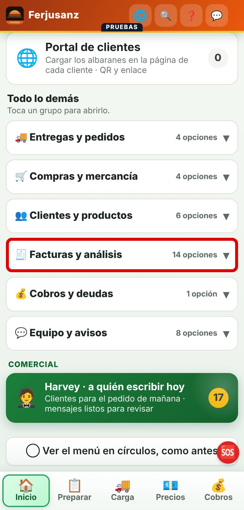</figure></li><li class="paso"><div class="txt"><span class="num">2</span><p>Pulsa <strong>«Facturas (desde la app)»</strong>.</p></div><figure>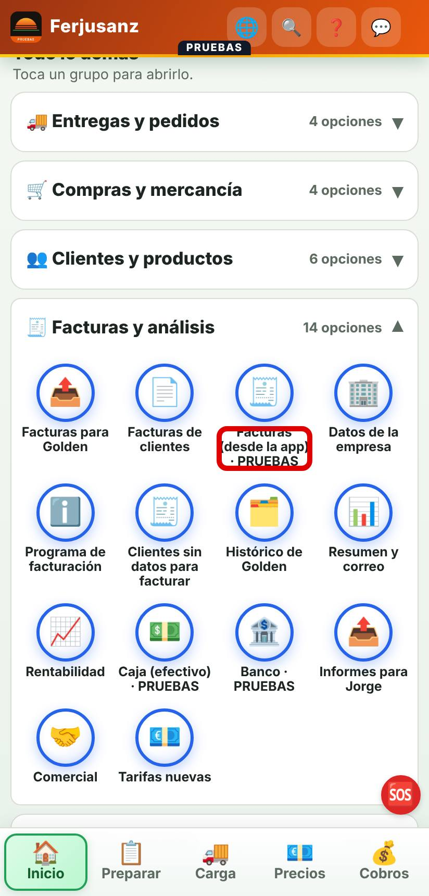</figure></li><li class="paso"><div class="txt"><span class="num">3</span><p>En «Por facturar» salen los albaranes entregados del mes, por cliente. Pulsa <strong>«Hacer factura»</strong> en el cliente.</p></div><figure>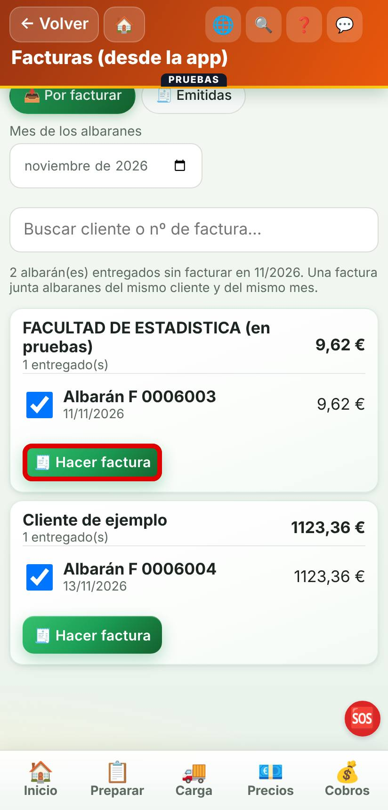</figure></li><li class="paso"><div class="txt"><span class="num">4</span><p>Mira que el <strong>cliente</strong> tenga NIF y dirección. Si falta algo, la app no deja facturar: complétalo en «Clientes sin datos para facturar».</p></div><figure>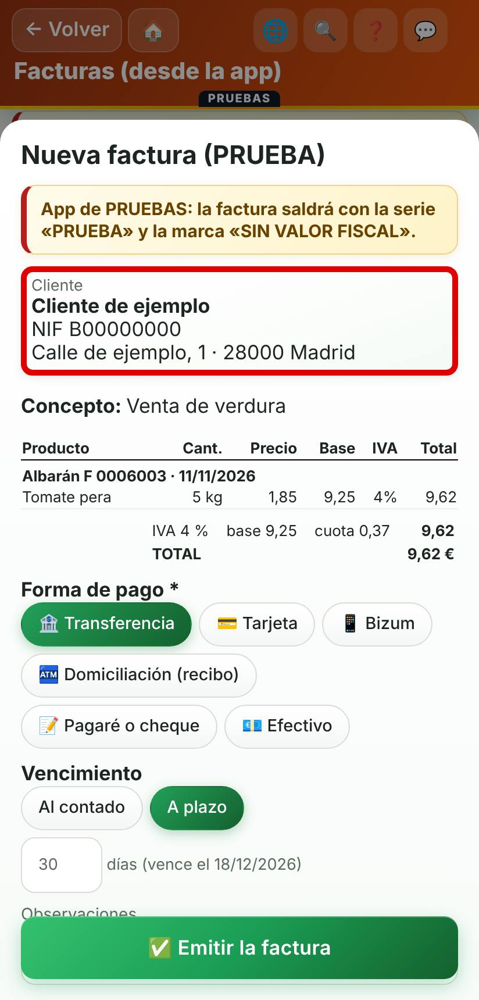</figure></li><li class="paso"><div class="txt"><span class="num">5</span><p>Elige la <strong>forma de pago</strong> y si es al contado o <strong>a plazo</strong> (cuántos días).</p></div><figure>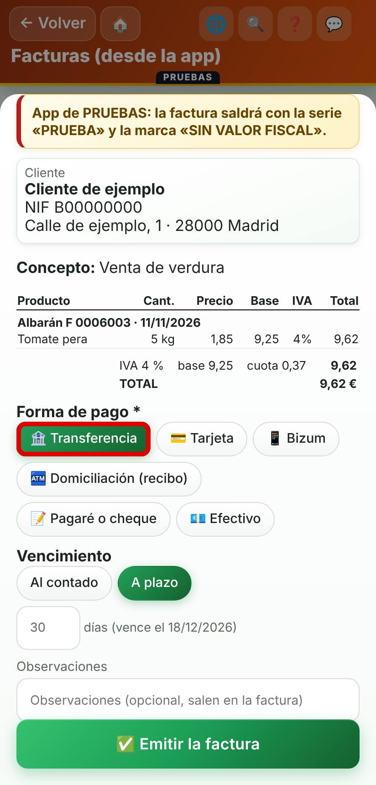</figure></li><li class="paso"><div class="txt"><span class="num">6</span><p>Revisa el total y pulsa <strong>«Emitir la factura»</strong>.</p></div><figure>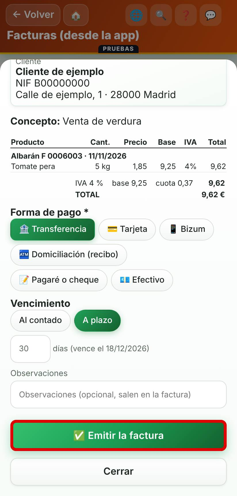</figure></li><li class="paso"><div class="txt"><span class="num">7</span><p>En <strong>«Emitidas»</strong> están todas: desde ahí se abre el PDF o se corrige.</p></div><figure>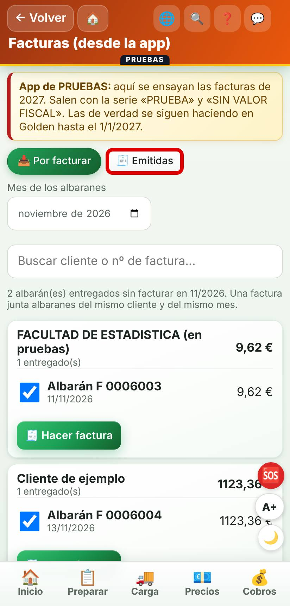</figure></li></ol><aside class="ojo"><b>Ojo</b><ul><li><strong>En efectivo, nunca más de 1.000 €</strong> (la ley no lo permite; la app tampoco deja).</li><li>Una factura <strong>no se borra nunca</strong>. Si está mal, se hace una <strong>rectificativa</strong> desde «Emitidas».</li></ul></aside><a class="arriba" href="#top">↑ Volver a las guías</a></section><section id="caja"><h2><span class="emo" aria-hidden="true">💵</span>Apuntar la caja (efectivo)</h2><p class="intro">Cada vez que entra o sale dinero en efectivo. Jorge lo necesita con fecha, cuánto, de quién o a quién y el justificante.</p><ol class="pasos"><li class="paso"><div class="txt"><span class="num">1</span><p>En «Facturas y análisis», pulsa <strong>«Caja (efectivo)»</strong>.</p></div><figure>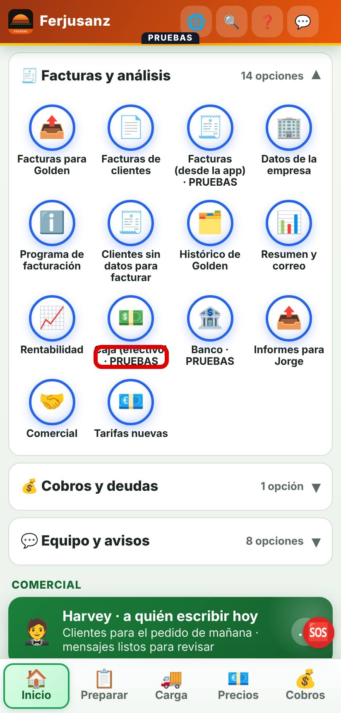</figure></li><li class="paso"><div class="txt"><span class="num">2</span><p>Pulsa <strong>«Entra efectivo»</strong> o <strong>«Sale efectivo»</strong>.</p></div><figure>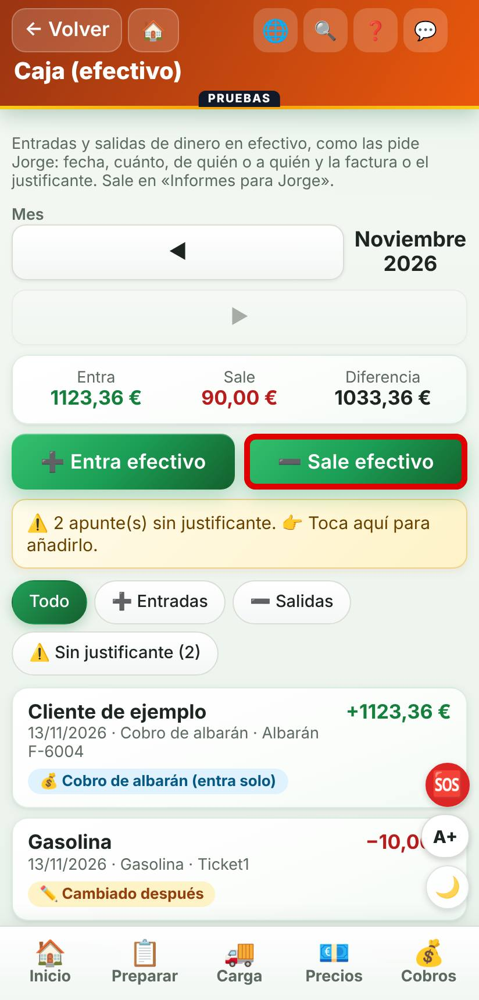</figure></li><li class="paso"><div class="txt"><span class="num">3</span><p>Pon la <strong>fecha</strong>, <strong>cuánto</strong>, <strong>a quién</strong> (o de quién), el NIF si lo tiene y el <strong>concepto</strong> (por ejemplo, «Gasolina»).</p></div><figure>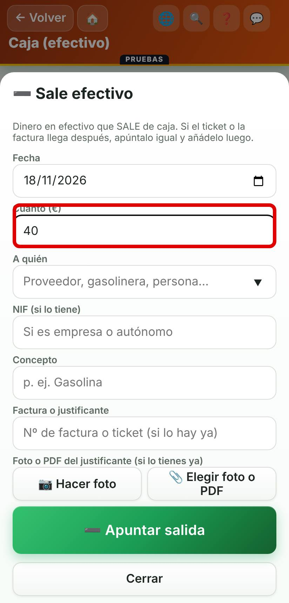</figure></li><li class="paso"><div class="txt"><span class="num">4</span><p>Pulsa <strong>«Hacer foto»</strong> y fotografía el ticket o la factura.</p></div><figure>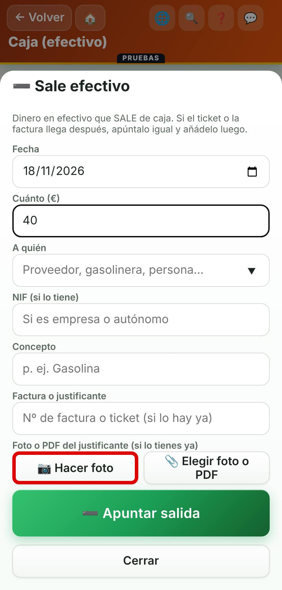</figure></li><li class="paso"><div class="txt"><span class="num">5</span><p>Pulsa <strong>«Apuntar salida»</strong> (o «Apuntar entrada»).</p></div><figure>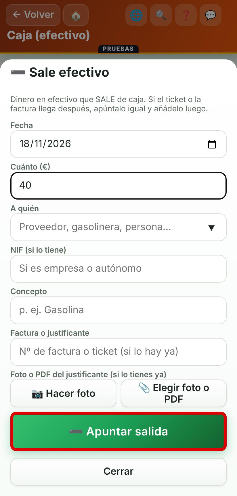</figure></li><li class="paso"><div class="txt"><span class="num">6</span><p>Si el ticket llega después, búscalo en la lista y pulsa <strong>«Falta justificante: añadirlo»</strong>.</p></div><figure>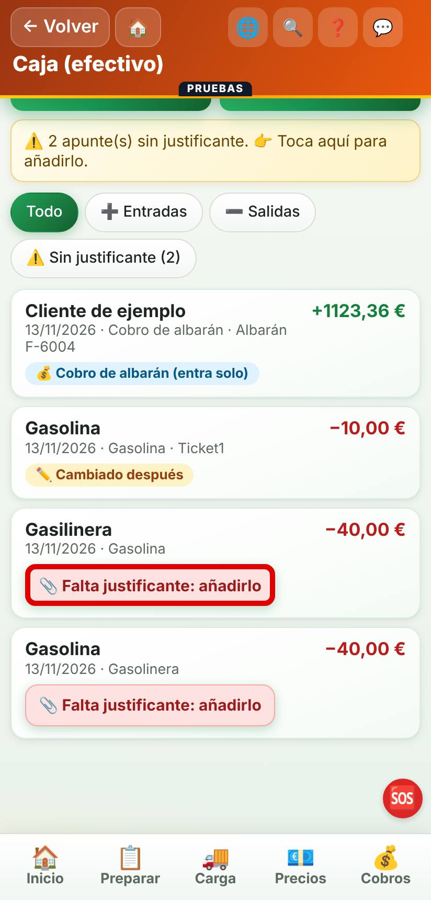</figure></li></ol><aside class="ojo"><b>Ojo</b><ul><li>Los <strong>cobros en efectivo de los albaranes entran solos</strong>: no hace falta apuntarlos.</li><li>No hay botón de borrar: si te equivocas, se <strong>corrige con un motivo</strong> y queda apuntado quién y cuándo.</li></ul></aside><a class="arriba" href="#top">↑ Volver a las guías</a></section><section id="banco"><h2><span class="emo" aria-hidden="true">🏦</span>Revisar el banco</h2><p class="intro">Cuando tengas el fichero del banco. La app propone de quién es cada movimiento; tú lo confirmas.</p><ol class="pasos"><li class="paso"><div class="txt"><span class="num">1</span><p>En «Facturas y análisis», pulsa <strong>«Banco»</strong>.</p></div><figure>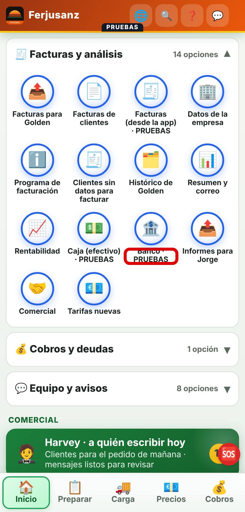</figure></li><li class="paso"><div class="txt"><span class="num">2</span><p>Pulsa <strong>«Subir fichero del banco»</strong> y elige el fichero que descargas de la web del banco (Norma 43 o Excel).</p></div><figure>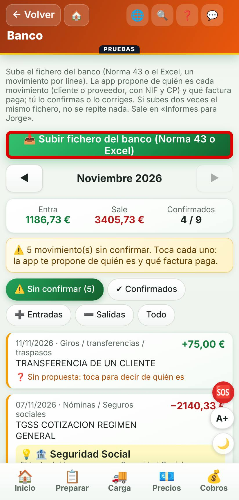</figure></li><li class="paso"><div class="txt"><span class="num">3</span><p>Toca cada movimiento <strong>sin confirmar</strong>.</p></div><figure>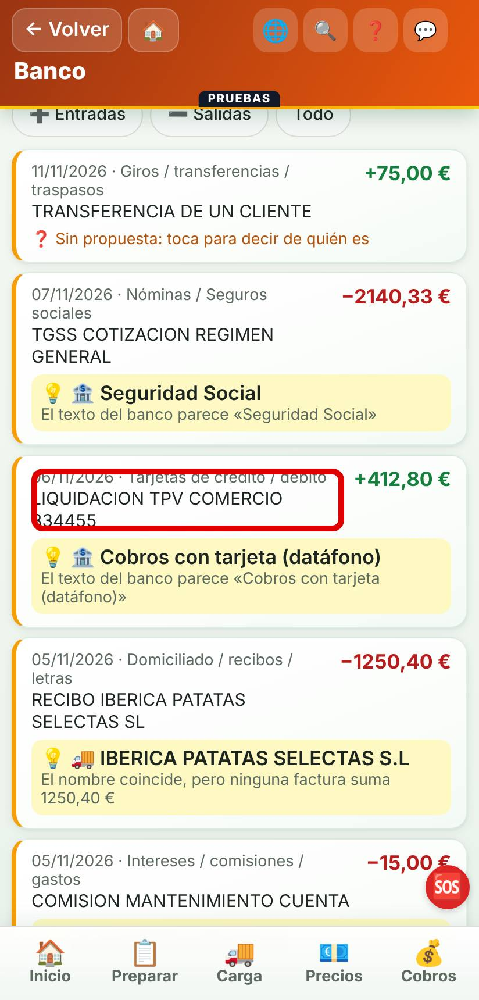</figure></li><li class="paso"><div class="txt"><span class="num">4</span><p>Lee la <strong>propuesta de la app</strong>. Si no es correcta, cambia cliente, proveedor u «Otro» y la factura que paga.</p></div><figure>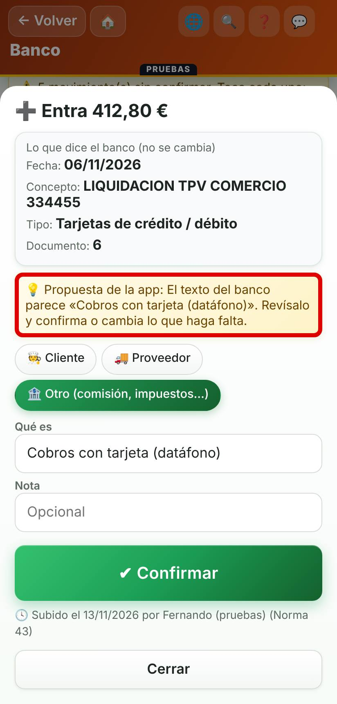</figure></li><li class="paso"><div class="txt"><span class="num">5</span><p>Pulsa <strong>«Confirmar»</strong>.</p></div><figure>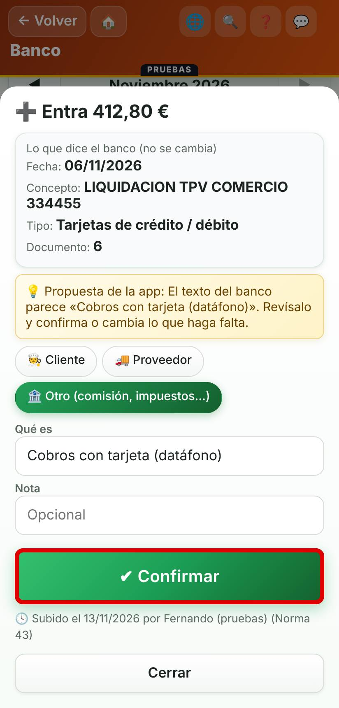</figure></li></ol><aside class="ojo"><b>Ojo</b><ul><li>Si subes <strong>dos veces el mismo fichero</strong>, no se repite nada.</li><li>Si el importe coincide con una factura de cliente, la factura queda <strong>cobrada</strong> sola.</li><li>Si el importe <strong>no cuadra</strong>, la app avisa: no lo fuerces, pregunta a Fernando.</li></ul></aside><a class="arriba" href="#top">↑ Volver a las guías</a></section><section id="proveedores"><h2><span class="emo" aria-hidden="true">📥</span>Facturas de proveedores</h2><p class="intro">Las facturas que nos mandan los proveedores. La mayoría llegan por correo y la app las lee sola.</p><ol class="pasos"><li class="paso"><div class="txt"><span class="num">1</span><p>Abre el grupo «Compras y mercancía» y pulsa <strong>«Facturas de proveedores»</strong>.</p></div><figure>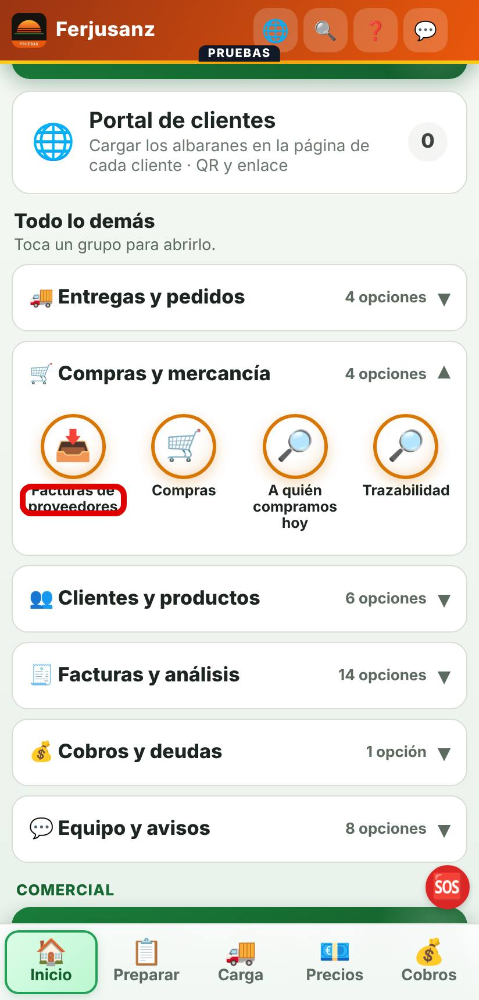</figure></li><li class="paso"><div class="txt"><span class="num">2</span><p>Aquí salen las que han llegado <strong>por correo</strong>. En cada una pulsa <strong>«Registrar compra con esta factura»</strong> (o descártala si no es una factura).</p></div><figure>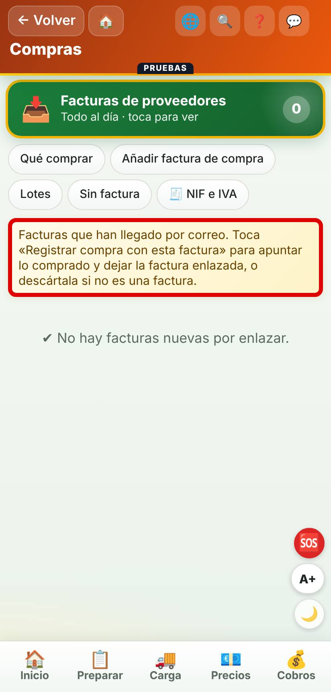</figure></li><li class="paso"><div class="txt"><span class="num">3</span><p>Si la factura llega <strong>en papel</strong>, pulsa <strong>«Añadir factura de compra»</strong>.</p></div><figure>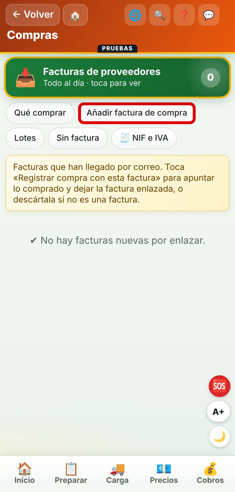</figure></li><li class="paso"><div class="txt"><span class="num">4</span><p>Elige el <strong>proveedor</strong>, pon la <strong>fecha de la factura</strong> (la que viene escrita, no la de hoy), el número y los productos. Pulsa <strong>«Hacer foto»</strong> y fotografía la factura.</p></div><figure>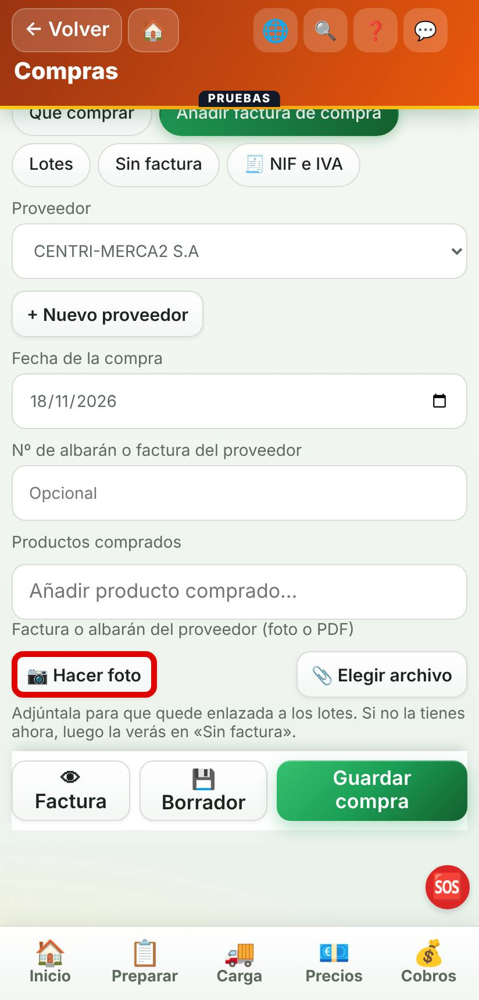</figure></li><li class="paso"><div class="txt"><span class="num">5</span><p>Pulsa <strong>«Guardar compra»</strong>.</p></div><figure>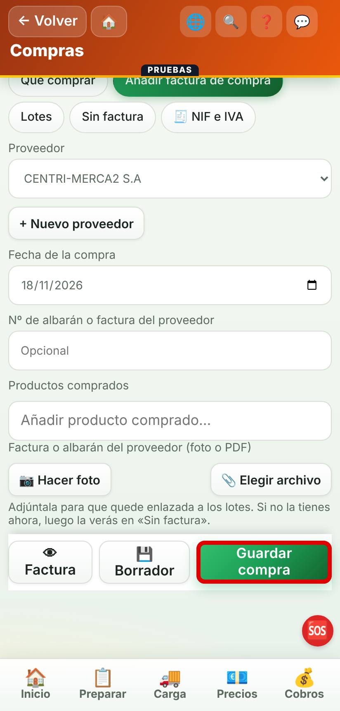</figure></li><li class="paso"><div class="txt"><span class="num">6</span><p>Para Jorge: pulsa <strong>«NIF e IVA»</strong>.</p></div><figure>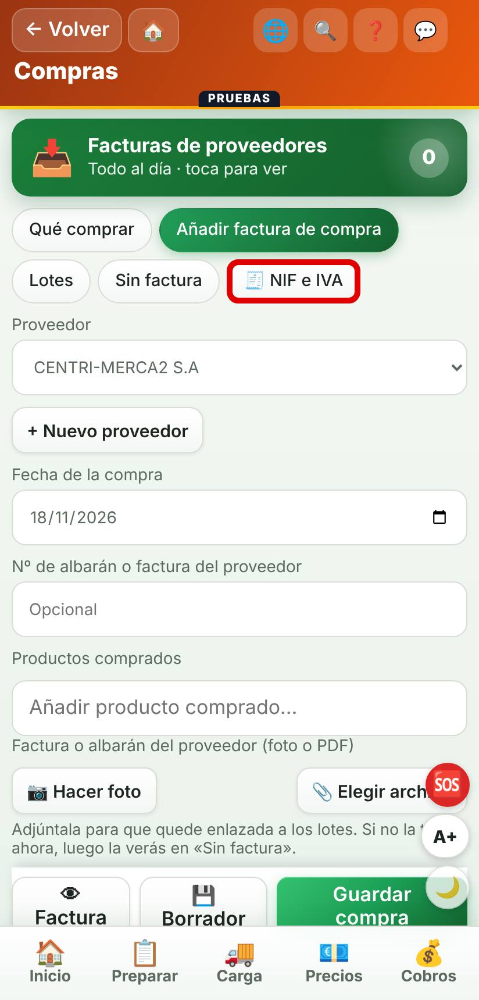</figure></li><li class="paso"><div class="txt"><span class="num">7</span><p>Revisa las que salen <strong>«Con avisos»</strong> y pulsa <strong>«Leer NIF e IVA de las facturas que aún no lo tienen»</strong>. Si falta el NIF de un proveedor, ponlo a mano.</p></div><figure>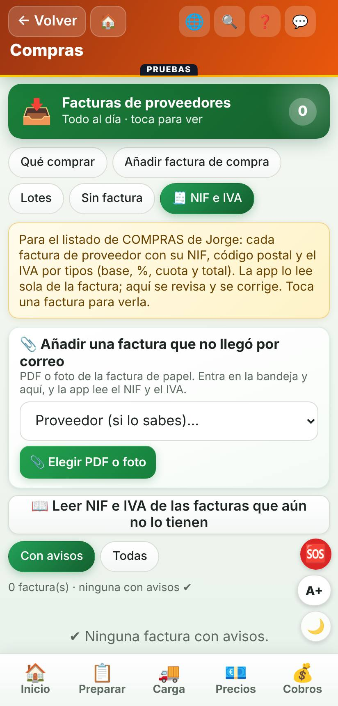</figure></li></ol><aside class="ojo"><b>Ojo</b><ul><li>Sin NIF e IVA, la factura <strong>no sale</strong> en el listado de COMPRAS de Jorge.</li><li>Si un producto se lee mal (por ejemplo, otro tomate), dilo: hay reglas para cada producto.</li></ul></aside><a class="arriba" href="#top">↑ Volver a las guías</a></section><section id="informes-jorge"><h2><span class="emo" aria-hidden="true">📤</span>Informes para Jorge (cierre de mes)</h2><p class="intro">Cada mes, <strong>entre el día 1 y el 10</strong>. La app no manda nada hasta que tú lo confirmas.</p><ol class="pasos"><li class="paso"><div class="txt"><span class="num">1</span><p>En «Facturas y análisis», pulsa <strong>«Informes para Jorge»</strong>.</p></div><figure>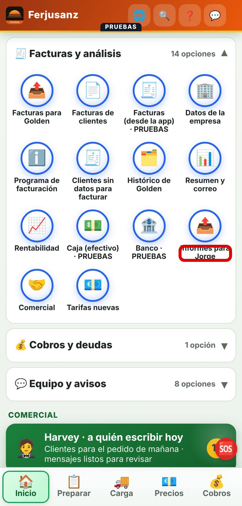</figure></li><li class="paso"><div class="txt"><span class="num">2</span><p>Sigue el <strong>cierre del mes en este orden</strong>: exporta de Golden las facturas del mes y cárgalas en «Histórico de Golden»; revisa que todas las de proveedores tengan «NIF e IVA».</p></div><figure>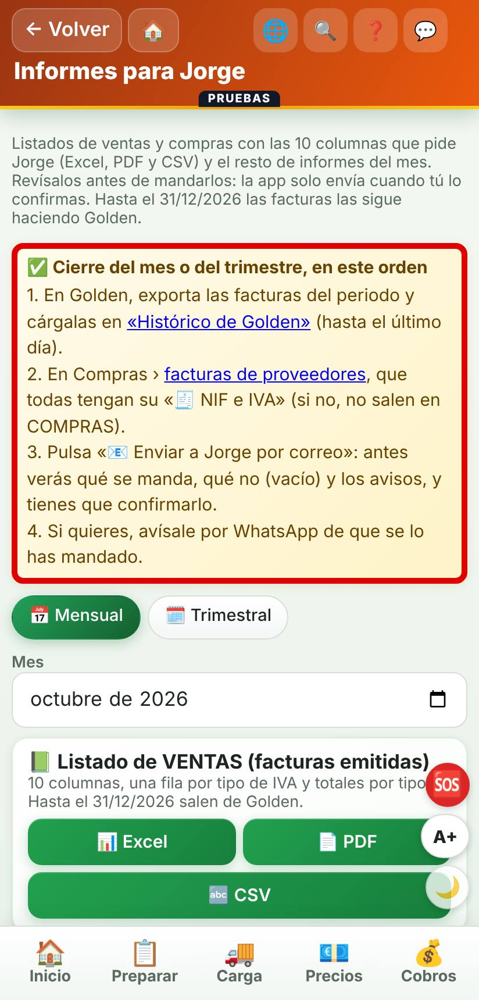</figure></li><li class="paso"><div class="txt"><span class="num">3</span><p>Elige <strong>Mensual</strong> (o Trimestral) y el <strong>mes</strong>. Abre el <strong>Excel</strong> o el <strong>PDF</strong> y revísalo.</p></div><figure>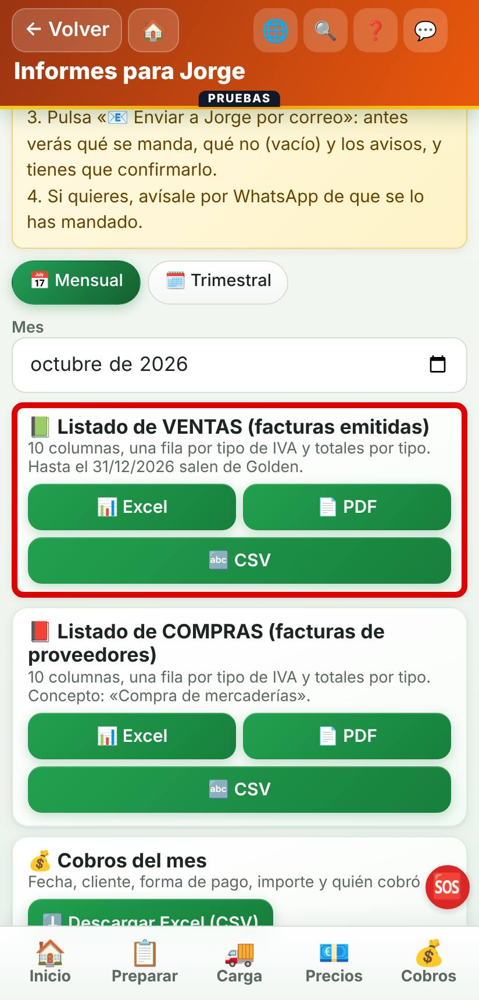</figure></li><li class="paso"><div class="txt"><span class="num">4</span><p>Pulsa <strong>«Enviar a Jorge por correo»</strong>. Verás qué se manda y los avisos. Si está bien, confírmalo.</p></div><figure>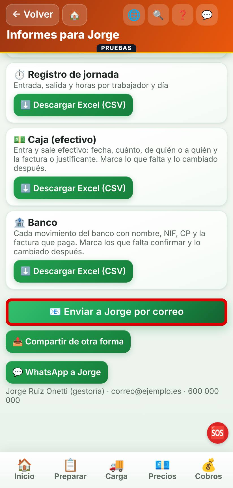</figure></li></ol><aside class="ojo"><b>Ojo</b><ul><li>Si sale un <strong>aviso rojo ⛔</strong>, no lo mandes: avisa a Fernando.</li><li>Si quieres, después avisa a Jorge por WhatsApp de que se lo has mandado.</li></ul></aside><a class="arriba" href="#top">↑ Volver a las guías</a></section><section id="guion-llamadas"><h2><span class="emo" aria-hidden="true">☎️</span>Guion de llamadas comerciales</h2><p class="intro">Para llamar a bares, restaurantes, colegios o residencias que aún no son clientes (o que dejaron de serlo). Solo a su <strong>teléfono del negocio</strong>. Frases cortas, con calma y de usted.</p><ol class="pasos"><li class="paso sin-foto"><div class="txt"><span class="num">1</span><p><strong>Saludo</strong>: «Buenos días, soy Carmen, de <strong>Ferjusanz</strong>, mayoristas de fruta, verdura, patatas y huevos en <strong>Mercamadrid</strong>. ¿Hablo con la persona que hace los pedidos de cocina?»</p></div></li><li class="paso sin-foto"><div class="txt"><span class="num">2</span><p><strong>Si no es</strong>: «¿Cuándo puedo encontrarla? ¿Cómo se llama?» Apúntalo y despídete.</p></div></li><li class="paso sin-foto"><div class="txt"><span class="num">3</span><p><strong>Motivo</strong>: «Le llamo porque repartimos en su zona de <strong>lunes a sábado</strong> y trabajamos con muchos restaurantes y colegios como el suyo. ¿Tiene un minuto?»</p></div></li><li class="paso sin-foto"><div class="txt"><span class="num">4</span><p><strong>Pregunta</strong>: «¿Cómo le va con su proveedor de fruta y verdura? ¿Qué es lo que más le cuesta: el precio, la calidad o que llegue a su hora?» <strong>Escucha y apunta</strong> lo que diga.</p></div></li><li class="paso sin-foto"><div class="txt"><span class="num">5</span><p><strong>Oferta</strong>: «Si me dice lo que suele pedir a la semana, le preparamos una tarifa sin compromiso. Se lo puedo mandar por WhatsApp para que lo rellene en un minuto. <strong>¿Le parece bien que se lo mande?</strong>»</p></div></li><li class="paso sin-foto"><div class="txt"><span class="num">6</span><p><strong>Cierre</strong>: si dice que sí, confirma el número y mándale la tarjeta del primer pedido desde su ficha. Si dice que no: «Muy bien, gracias por su tiempo. Si un día lo necesita, estamos en Mercamadrid.»</p></div></li><li class="paso sin-foto"><div class="txt"><span class="num">7</span><p><strong>Después</strong>: apunta en su ficha qué dijo y cuándo volver a llamar.</p></div></li></ol><h3>Si dice…</h3><ul class="dice"><li>«<strong>Ya tengo proveedor</strong>»: «Lo entiendo. Muchos clientes nos usan para lo que les falla o para comparar. ¿Le mando la tarifa y la compara sin compromiso?»</li><li>«<strong>Es caro / me lo dejan más barato</strong>»: «¿Qué productos compra más? Se lo miramos con precio de Mercamadrid del día.» (No prometas precios: los pone Fernando.)</li><li>«<strong>Ahora no puedo</strong>»: «¿Cuándo le viene mejor que le llame? ¿Por la tarde o mañana?»</li><li>«<strong>Mándamelo por correo</strong>»: «Claro. ¿A qué correo? Y mejor aún si me dice lo que suele pedir y se lo calculamos.»</li><li>«<strong>No me llamen más</strong>»: «Disculpe, no le volveremos a llamar.» Apúntalo en su ficha: <strong>«No llamar más»</strong>, y díselo a Fernando.</li></ul><aside class="ojo"><b>Ojo</b><ul><li><strong>Nunca</strong>: prometer descuentos, plazos de pago ni precios cerrados (eso lo decide Fernando).</li><li><strong>Solo se manda WhatsApp o correo si dice que sí</strong> en la llamada.</li><li>Si pregunta de dónde tenemos su número: de su negocio (web, Google o su tarjeta).</li></ul></aside><a class="arriba" href="#top">↑ Volver a las guías</a></section>
<footer>Fotos sacadas de la app de pruebas (naranja) el 18/11/2026, con datos de prueba y los nombres tapados. En la app de verdad la cabecera es verde.</footer>
</main>
